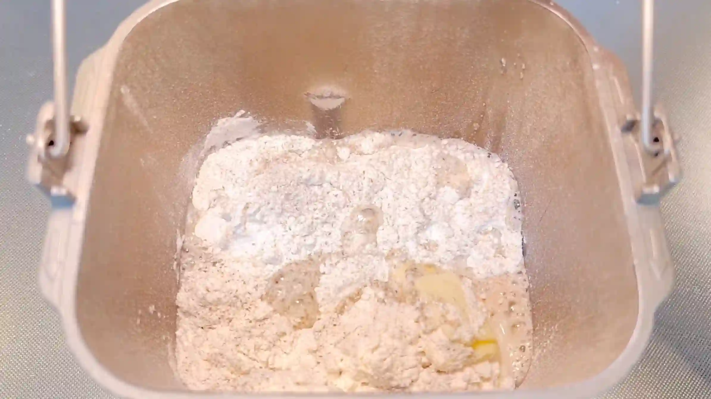
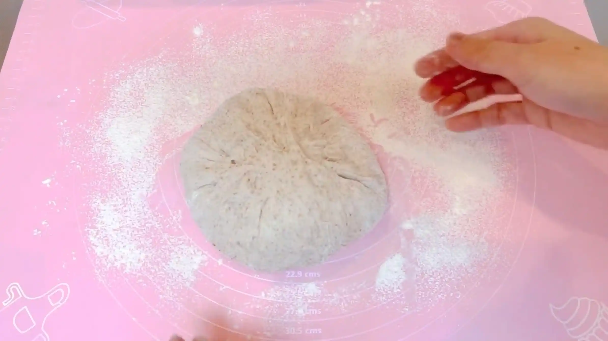
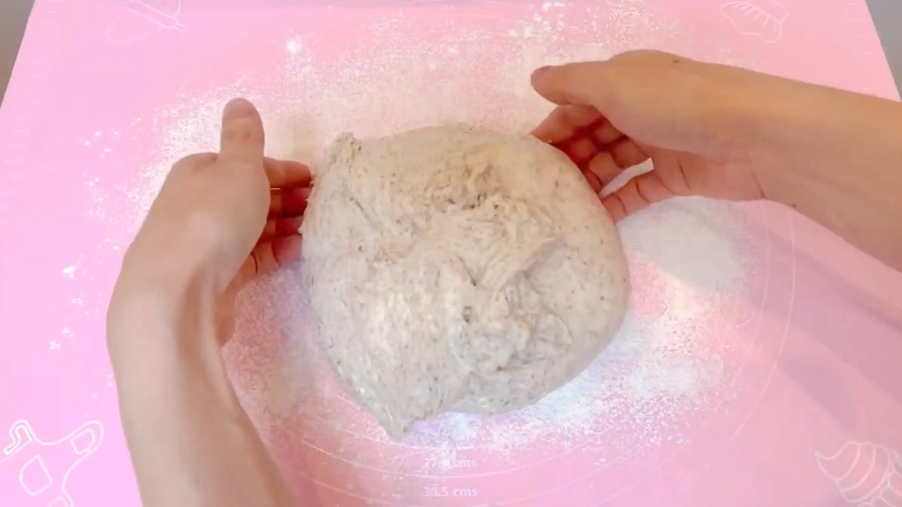
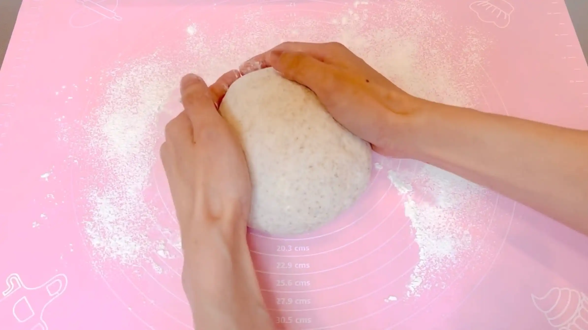
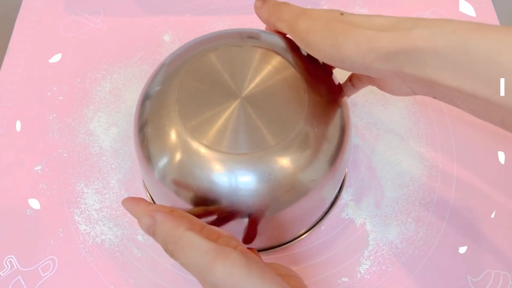
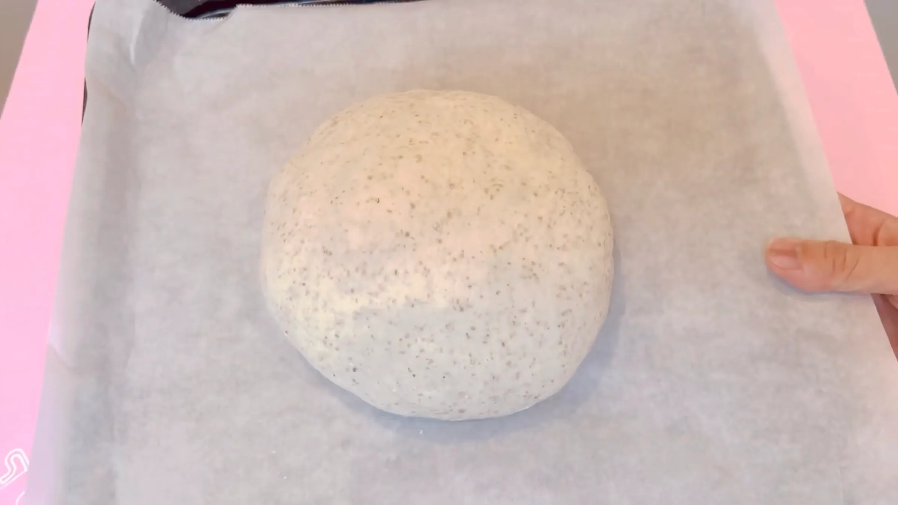
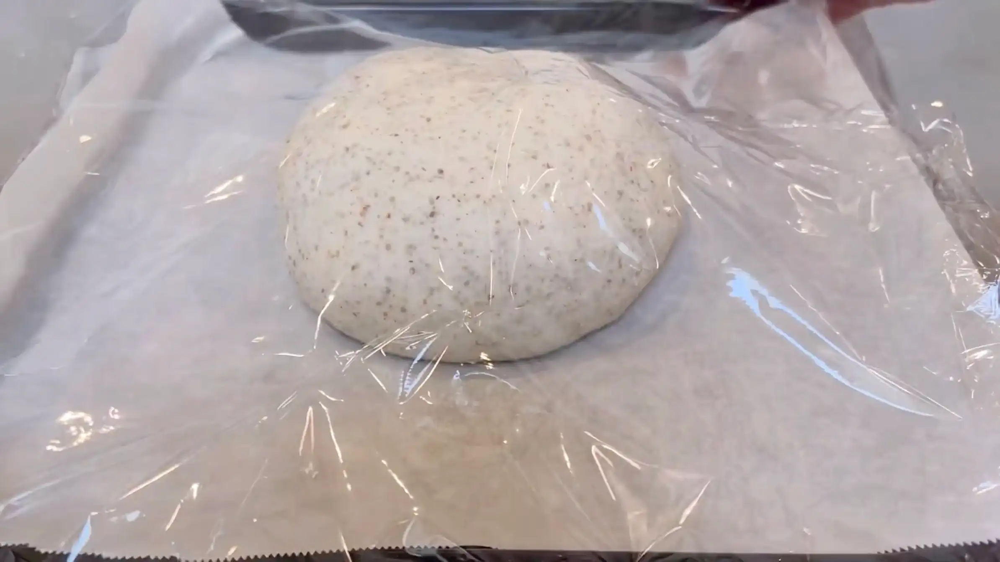
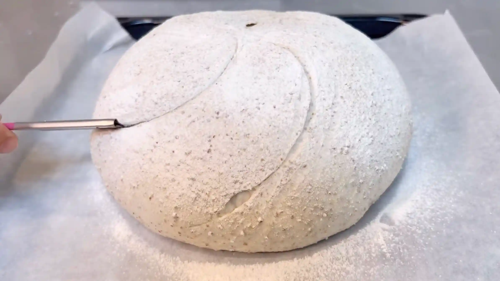
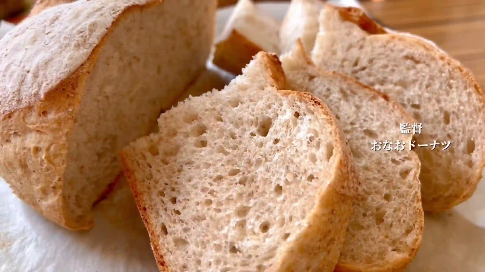

材料
※粉量を変えると自動計算されます
生地
作り方
生地
STEP 1
ホームベーカリーで生地を作る
ホームベーカリーに材料をセットして「生地コース」で生地を作ります。カンパーニュは水分が多く、ベタつきやすい生地を扱うことが多いため、手作業で捏ねるのが難しいパンです。本レシピではホームベーカリーにベタつく生地の捏ねを任せて、手軽に作っていきます。コースが終わったら、次の作業に進みます。
ホームベーカリーに材料をセットして「生地コース」で生地を作ります。カンパーニュは水分が多く、ベタつきやすい生地を扱うことが多いため、手作業で捏ねるのが難しいパンです。本レシピではホームベーカリーにベタつく生地の捏ねを任せて、手軽に作っていきます。コースが終わったら、次の作業に進みます。

STEP 2
生地を取り出す（[動画 03:43]）
生地がベタつきやすいため、作業台に粉をふっておきます。生地がケースにくっついて取り出しにくい場合は、手で取り出すよりもヘラを使うと取り出しやすくなります。
生地がベタつきやすいため、作業台に粉をふっておきます。生地がケースにくっついて取り出しにくい場合は、手で取り出すよりもヘラを使うと取り出しやすくなります。

STEP 3
生地の周りを中心に集めて閉じる（[動画 04:07]）
生地の表面はやわらかくベタつくため、無理に触ると生地が手について扱いにくくなります。周囲の粉をふった生地を中心に集めるようにして、とじ目を閉じます。
生地の表面はやわらかくベタつくため、無理に触ると生地が手について扱いにくくなります。周囲の粉をふった生地を中心に集めるようにして、とじ目を閉じます。

STEP 4
生地を丸く整える（[動画 04:33]）
とじ目を下にして、生地を丸く整えます。生地の端を軽く押さえ、手前にやさしく転がすようにすると、表面に張りを持たせながら丸めることができます。
とじ目を下にして、生地を丸く整えます。生地の端を軽く押さえ、手前にやさしく転がすようにすると、表面に張りを持たせながら丸めることができます。

STEP 5
ボウルを被せて20分おく
生地を休ませることで、生地がゆるみ、成形がしやすくなります。生地が落ち着いたら次の工程へ進みます。
生地を休ませることで、生地がゆるみ、成形がしやすくなります。生地が落ち着いたら次の工程へ進みます。

STEP 6
生地を成形し、天板にのせる（[動画 05:24]）
休ませた生地をもう一度丸め、成形します。とじ目が上になるように生地をひっくり返し、外側から中心に生地を集めるようにして、とじ目を閉じます。とじ目を下にして、生地の端を軽く押さえ、手前にやさしく転がすように丸く整えます。
休ませた生地をもう一度丸め、成形します。とじ目が上になるように生地をひっくり返し、外側から中心に生地を集めるようにして、とじ目を閉じます。とじ目を下にして、生地の端を軽く押さえ、手前にやさしく転がすように丸く整えます。

STEP 7
ラップをして50分おく
丸め直した生地を二次発酵させます。発酵時間は室温によって変わるため、50分を目安に、生地がひとまわりふっくらと膨らんだら次の工程へ進みます。
丸め直した生地を二次発酵させます。発酵時間は室温によって変わるため、50分を目安に、生地がひとまわりふっくらと膨らんだら次の工程へ進みます。

STEP 8
オーブンを210℃に予熱する
焼成前にオーブンを210℃にしっかり予熱しておきます。
焼成前にオーブンを210℃にしっかり予熱しておきます。
STEP 9
粉をふりクープを入れる
生地の表面に粉をふり、クープを入れます。焼成中に生地が膨らむ際、クープを入れた部分から生地が開くため、表面が不規則に裂けるのを防ぎ、きれいな形に焼き上げやすくなります。
生地の表面に粉をふり、クープを入れます。焼成中に生地が膨らむ際、クープを入れた部分から生地が開くため、表面が不規則に裂けるのを防ぎ、きれいな形に焼き上げやすくなります。

STEP 10
オーブン210℃で25分焼く
生地の表面がしっかり色づくまで焼きます。焼き時間は目安とし、ご家庭のオーブンに合わせて調整してください。
生地の表面がしっかり色づくまで焼きます。焼き時間は目安とし、ご家庭のオーブンに合わせて調整してください。

動画でチェック
おいしく作るためのワンポイントコラム
こんにちは、おなおドーナツです！
今回は、ホームベーカリーを使っておうちで手軽に大きな田舎パンの雰囲気を楽しめる『なんちゃってカンパーニュ』を作っていきます。ハードルの高いイメージがあるカンパーニュですが、身近な材料といつもの道具だけで、しっとり美味しく焼き上げます。理想の風味と食感を引き出すための3つのコツをまとめました。
① 本格的な味わいを生む粉の配合のコツ
ベースとなる強力粉に対してライ麦を20〜25％ほど加えるのがポイントです。ライ麦は種類や粒度によって味や発酵加減が変わる特徴があるため、初めて使う場合は20％くらいからスタートし、慣れてきたら好みに応じて割合を増やしていくのがおすすめ。そうすることで、おうちでも失敗せずに本格的な香ばしい風味を楽しめます。
② 食べやすさと手軽さを両立する生地作りのコツ
本来のカンパーニュには使いませんが、今回はあえて生地にバターを入れるのがコツです。バターを加えることで、日が経ってもしっとり感が持続し、毎日でも食べやすい優しい味になります。ホームベーカリーのパン生地コースにお任せすれば、時短で簡単に仕上がるのも嬉しい点です。
③ 家庭用オーブンに合わせた焼成のコツ
家庭用オーブンの最大温度や性能はさまざまで、最高温度をキープできるのは最初の数分だけという仕様も多いですが、今回はどのご家庭でも美味しく焼けるよう210℃で中までしっかり火を通す焼き方にしています。パン屋さんのような高音スチームの火入れができなくても、この温度でじっくり熱を伝えることで、外は香ばしく中はふんわりとした十分に美味しいパンが焼き上がります。
自分好みのクープを入れて焼いたカンパーニュは、とっても可愛いですよね。オーブンから漂う素朴な香りは格別です！それでは、おうちパン作りの時間を一緒に満喫しましょう！
今回は、ホームベーカリーを使っておうちで手軽に大きな田舎パンの雰囲気を楽しめる『なんちゃってカンパーニュ』を作っていきます。ハードルの高いイメージがあるカンパーニュですが、身近な材料といつもの道具だけで、しっとり美味しく焼き上げます。理想の風味と食感を引き出すための3つのコツをまとめました。
① 本格的な味わいを生む粉の配合のコツ
ベースとなる強力粉に対してライ麦を20〜25％ほど加えるのがポイントです。ライ麦は種類や粒度によって味や発酵加減が変わる特徴があるため、初めて使う場合は20％くらいからスタートし、慣れてきたら好みに応じて割合を増やしていくのがおすすめ。そうすることで、おうちでも失敗せずに本格的な香ばしい風味を楽しめます。
② 食べやすさと手軽さを両立する生地作りのコツ
本来のカンパーニュには使いませんが、今回はあえて生地にバターを入れるのがコツです。バターを加えることで、日が経ってもしっとり感が持続し、毎日でも食べやすい優しい味になります。ホームベーカリーのパン生地コースにお任せすれば、時短で簡単に仕上がるのも嬉しい点です。
③ 家庭用オーブンに合わせた焼成のコツ
家庭用オーブンの最大温度や性能はさまざまで、最高温度をキープできるのは最初の数分だけという仕様も多いですが、今回はどのご家庭でも美味しく焼けるよう210℃で中までしっかり火を通す焼き方にしています。パン屋さんのような高音スチームの火入れができなくても、この温度でじっくり熱を伝えることで、外は香ばしく中はふんわりとした十分に美味しいパンが焼き上がります。
自分好みのクープを入れて焼いたカンパーニュは、とっても可愛いですよね。オーブンから漂う素朴な香りは格別です！それでは、おうちパン作りの時間を一緒に満喫しましょう！


ホームベーカリーのパン生地コースを活用し、特別な道具なしでドンと丸く焼き上げる『なんちゃってカンパーニュ』のレシピです。本来の製法にとらわれず、ライ麦の風味にバターのしっとり感をプラスして、食べやすい食感に仕上げます。コラムでは「粉の配合のコツ」「生地作りのコツ」「焼成のコツ」の3つのポイントをご紹介します。